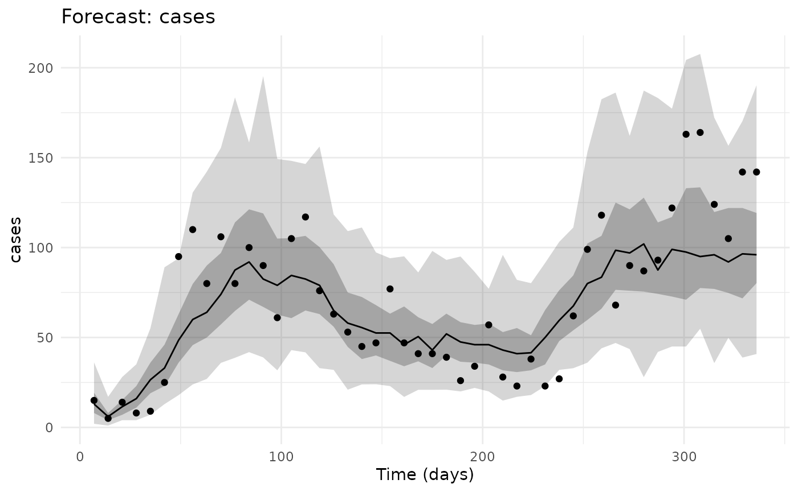
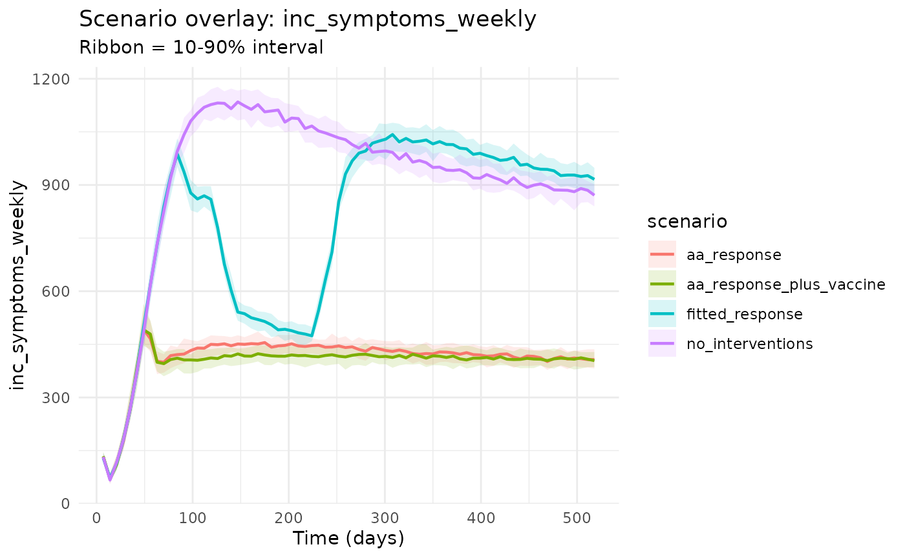
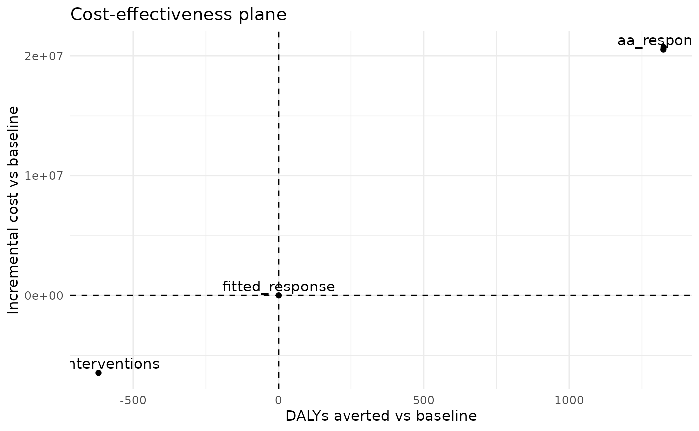
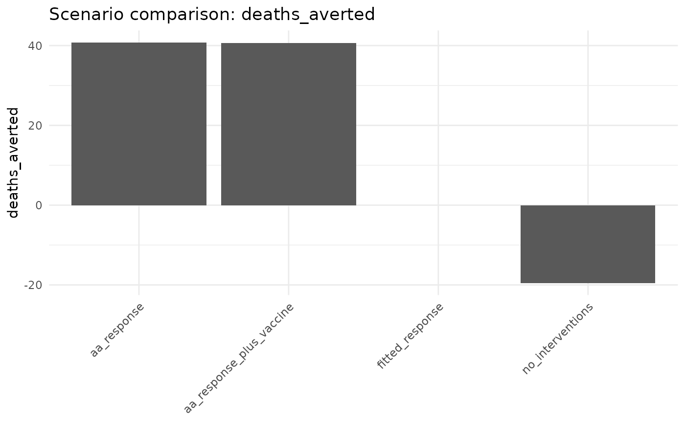
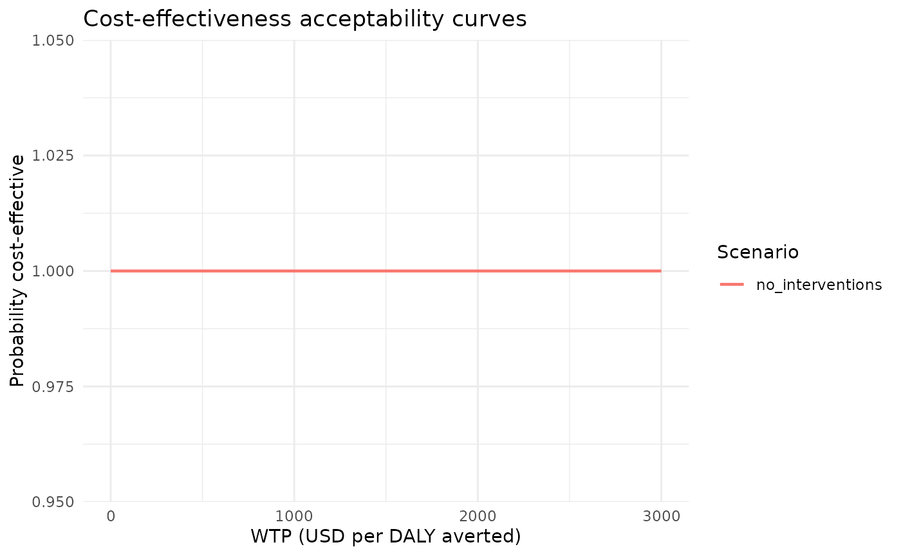
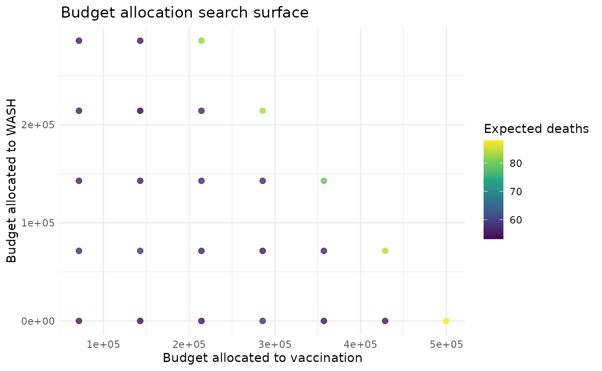

Health Economics and Optimisation
Source:vignettes/health_econ_and_optimisation.Rmd
health_econ_and_optimisation.RmdStarting From The Fitted Baseline
The health-economic workflow uses the same saved Kirotshe pMCMC fit as the scenario vignette. We first check the fitted weekly case curve, then use the posterior-median parameter set for scenario simulation and costing.
library(chlaa)
library(ggplot2)
library(dplyr)
#>
#> Attaching package: 'dplyr'
#> The following objects are masked from 'package:stats':
#>
#> filter, lag
#> The following objects are masked from 'package:base':
#>
#> intersect, setdiff, setequal, union
fit_obj <- readRDS(system.file(
"extdata", "kirotshe_particle_fit.rds",
package = "chlaa",
mustWork = TRUE
))
fit <- fit_obj$fit
base_pars <- fit_obj$pars
observed <- fit_obj$observed
burnin <- fit_obj$burnin
pars_fit <- chlaa_update_from_fit(
fit = fit,
pars = base_pars,
draw = "median",
burnin = burnin
)
fit_fc <- chlaa_forecast_from_fit(
fit = fit,
pars = base_pars,
time = observed$time,
vars = "inc_symptoms_weekly",
include_cases = TRUE,
obs_interval = 7,
obs_model = "nbinom",
n_draws = 80,
burnin = burnin,
seed = 21,
dt = 1
)
chlaa_plot_forecast(
fit_fc,
var = "cases",
data = observed,
data_y = "cases"
)
Intervention Scenarios
The economic comparison uses one fitted-response baseline, a no-intervention counterfactual, and two anticipatory-action examples. Costs and DALYs are then computed from the simulated cumulative cases, deaths, treatments, WASH windows, and vaccine doses.
horizon <- max(observed$time) + 182
scenario_time <- seq(7, horizon, by = 7)
trigger_time <- min(observed$time[observed$cases >= 50])
response_end <- horizon + 1
campaign_days <- 28
vaccine_doses <- floor(0.20 * pars_fit$N)
no_intervention <- list(
chlor_start = 0, chlor_end = 0, chlor_effect = 0,
hyg_start = 0, hyg_end = 0, hyg_effect = 0,
lat_start = 0, lat_end = 0, lat_effect = 0,
cati_start = 0, cati_end = 0, cati_effect = 0,
orc_start = 0, orc_end = 0, orc_capacity = 0,
ctc_start = 0, ctc_end = 0, ctc_capacity = 0,
vax1_start = 0, vax1_end = 0, vax1_doses_per_day = 0, vax1_total_doses = 0,
vax2_start = 0, vax2_end = 0, vax2_doses_per_day = 0, vax2_total_doses = 0
)
aa_response <- list(
chlor_start = trigger_time, chlor_end = response_end, chlor_effect = pars_fit$chlor_effect,
hyg_start = trigger_time, hyg_end = response_end, hyg_effect = pars_fit$hyg_effect,
lat_start = trigger_time, lat_end = response_end, lat_effect = max(pars_fit$lat_effect, 0.10),
cati_start = trigger_time, cati_end = response_end, cati_effect = pars_fit$cati_effect,
orc_start = trigger_time, orc_end = response_end, orc_capacity = pars_fit$orc_capacity,
ctc_start = trigger_time, ctc_end = response_end, ctc_capacity = pars_fit$ctc_capacity,
vax1_start = 0, vax1_end = 0, vax1_doses_per_day = 0, vax1_total_doses = 0,
vax2_start = 0, vax2_end = 0, vax2_doses_per_day = 0, vax2_total_doses = 0
)
aa_vaccination <- modifyList(aa_response, list(
vax1_start = trigger_time + 14,
vax1_end = trigger_time + 14 + campaign_days,
vax1_total_doses = vaccine_doses,
vax1_doses_per_day = vaccine_doses / campaign_days
))
scenarios <- list(
chlaa_scenario("fitted_response", list()),
chlaa_scenario("no_interventions", no_intervention),
chlaa_scenario("aa_response", aa_response),
chlaa_scenario("aa_response_plus_vaccine", aa_vaccination)
)
runs <- chlaa_run_scenarios(
pars = pars_fit,
scenarios = scenarios,
time = scenario_time,
n_particles = 50,
dt = 1,
seed = 22
)
chlaa_plot_scenario_overlay(
runs,
var = "inc_symptoms_weekly"
)
Costs, DALYs, And Cost-Effectiveness
The default economics inputs are deliberately transparent package data. They are useful for workflow development and should be replaced with local values for decision-making.
econ <- chlaa_econ_defaults()
head(chlaa_econ_sources(), 8)
#> name
#> cost_per_vaccine_dose published
#> cost_per_orc_treatment assumption
#> cost_per_ctc_treatment assumption
#> cost_chlorination_per_person_day assumption
#> cost_hygiene_per_person_day assumption
#> cost_latrine_per_person_day assumption
#> cost_cati_per_person_day assumption
#> dw_symptomatic published
#> source_type
#> cost_per_vaccine_dose Routh et al. (2017) Cost Evaluation of a Government-Conducted Oral Cholera Vaccination Campaign—Haiti
#> cost_per_orc_treatment Illustrative planning assumption for rapid scenario analysis
#> cost_per_ctc_treatment Illustrative planning assumption for rapid scenario analysis
#> cost_chlorination_per_person_day Illustrative planning assumption for rapid scenario analysis
#> cost_hygiene_per_person_day Illustrative planning assumption for rapid scenario analysis
#> cost_latrine_per_person_day Illustrative planning assumption for rapid scenario analysis
#> cost_cati_per_person_day Illustrative planning assumption for rapid scenario analysis
#> dw_symptomatic Global Burden of Disease diarrhoea disability weights (moderate episode range includes ~0.188)
#> citation
#> cost_per_vaccine_dose 2013
#> cost_per_orc_treatment
#> cost_per_ctc_treatment
#> cost_chlorination_per_person_day
#> cost_hygiene_per_person_day
#> cost_latrine_per_person_day
#> cost_cati_per_person_day
#> dw_symptomatic https://vivarium-research.readthedocs.io/en/latest/models/causes/diarrheal_diseases/gbd_2020/index.html
#> source_url
#> cost_per_vaccine_dose https://pmc.ncbi.nlm.nih.gov/articles/PMC5676633/
#> cost_per_orc_treatment No single globally transferable unit cost; should be replaced with context-specific ORS/ORC costing.
#> cost_per_ctc_treatment No single globally transferable unit cost; should be replaced with local CTC costing.
#> cost_chlorination_per_person_day WASH package unit costs vary widely by programme design and context.
#> cost_hygiene_per_person_day WASH package unit costs vary widely by programme design and context.
#> cost_latrine_per_person_day WASH package unit costs vary widely by programme design and context.
#> cost_cati_per_person_day CATI cost structures vary by deployment scale and logistics.
#> dw_symptomatic Default uses a moderate symptomatic diarrhoeal disability proxy for cholera.
#> notes
#> cost_per_vaccine_dose Total campaign cost per dose around USD 2.90 in Haiti 2013; default uses rounded illustrative value.
#> cost_per_orc_treatment
#> cost_per_ctc_treatment
#> cost_chlorination_per_person_day
#> cost_hygiene_per_person_day
#> cost_latrine_per_person_day
#> cost_cati_per_person_day
#> dw_symptomatic
cmp <- chlaa_compare_scenarios(
runs,
baseline = "fitted_response",
include_econ = TRUE,
econ = econ,
wtp = 1500
)
cmp
#> # A tibble: 4 × 21
#> scenario infections cases_symptomatic deaths doses orc_treated ctc_treated
#> <chr> <dbl> <dbl> <dbl> <dbl> <dbl> <dbl>
#> 1 aa_response 122496. 30476. 25.7 0 2029. 3466.
#> 2 aa_respons… 118074. 29378. 25.8 103124 1945. 3336.
#> 3 fitted_res… 235145. 58274. 66.5 0 1014. 1878.
#> 4 no_interve… 272620. 67604. 86.0 0 0 0
#> # ℹ 14 more variables: infections_averted <dbl>, cases_averted <dbl>,
#> # deaths_averted <dbl>, cost <dbl>, dalys <dbl>, cost_diff <dbl>,
#> # dalys_averted <dbl>, icer_cost_per_daly_averted <dbl>,
#> # icer_cost_per_death_averted <dbl>, mean_cost_vax <dbl>,
#> # mean_cost_care <dbl>, mean_cost_wash <dbl>, nmb <dbl>, inmb <dbl>
chlaa_plot_ce_plane(cmp)
chlaa_plot_scenarios(cmp, metric = "deaths_averted")
Cost-Effectiveness Acceptability Curves
The CEAC estimates which scenario has the highest net monetary benefit across particles at each willingness-to-pay threshold.
ceac_tbl <- chlaa_ceac(
runs,
baseline = "fitted_response",
wtp = seq(0, 3000, by = 250),
econ = econ
)
head(ceac_tbl)
#> # A tibble: 6 × 3
#> scenario wtp prob_best
#> <chr> <dbl> <dbl>
#> 1 no_interventions 0 1
#> 2 no_interventions 250 1
#> 3 no_interventions 500 1
#> 4 no_interventions 750 1
#> 5 no_interventions 1000 1
#> 6 no_interventions 1250 1
ggplot(ceac_tbl, aes(x = wtp, y = prob_best, colour = scenario)) +
geom_line(linewidth = 0.8) +
labs(
x = "WTP (USD per DALY averted)",
y = "Probability cost-effective",
colour = "Scenario",
title = "Cost-effectiveness acceptability curves"
) +
theme_minimal()
Budget Allocation
The optimiser is a simple search over vaccination, WASH, and care allocations. It is meant as a transparent starting point: the key object is the evaluations table, which shows how simulated outcomes change across feasible allocations.
opt <- chlaa_optimise_budget(
pars = pars_fit,
budget = 5e5,
time = seq(trigger_time, horizon, by = 7),
n_particles = 20,
dt = 1,
grid_size = 8,
min_fraction = list(vax = 0.1),
max_fraction = list(wash = 0.6),
max_vax_doses_per_day = 5000,
max_total_doses = vaccine_doses
)
opt$best
#> frac_vax frac_wash frac_care budget_vax budget_wash budget_care doses
#> 9 0.2857143 0.4285714 0.2857143 142857.1 214285.7 142857.1 70000
#> wash_intensity deaths cases
#> 9 0.008036575 53.2 63535.5
ggplot(opt$evaluations, aes(x = budget_vax, y = budget_wash, colour = deaths)) +
geom_point(size = 2, alpha = 0.8) +
scale_colour_viridis_c() +
labs(
x = "Budget allocated to vaccination",
y = "Budget allocated to WASH",
colour = "Expected deaths",
title = "Budget allocation search surface"
) +
theme_minimal()
The scenario comparison, CEAC, and optimisation outputs answer related but different questions: expected health gain, probability of being cost-effective, and how outcomes shift as a fixed budget is reallocated.